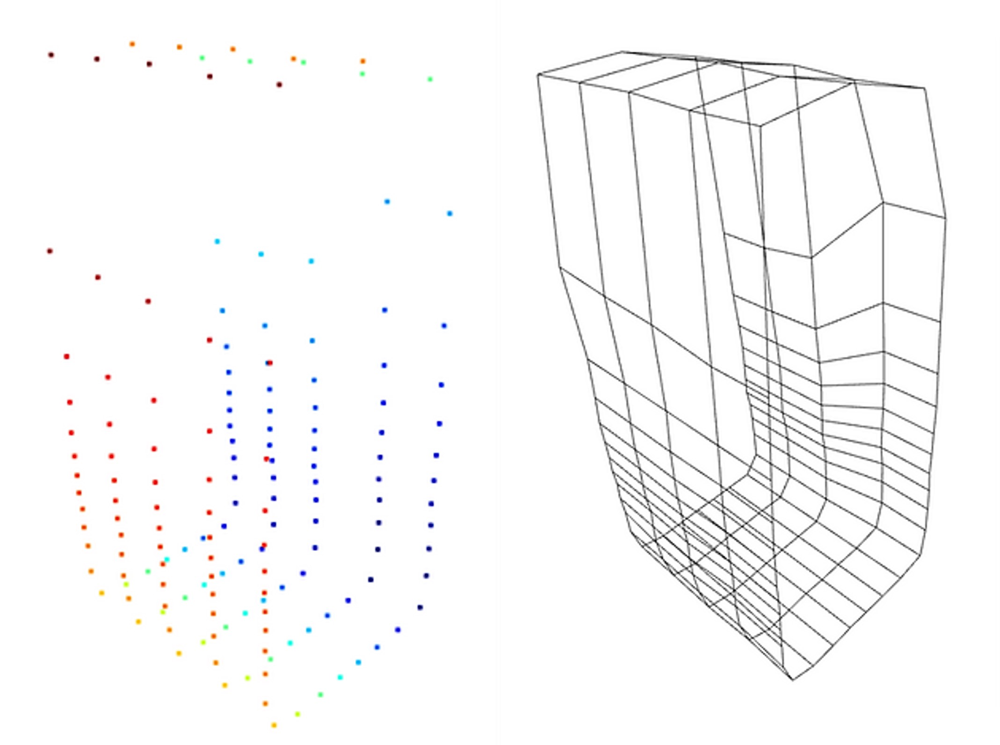
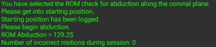
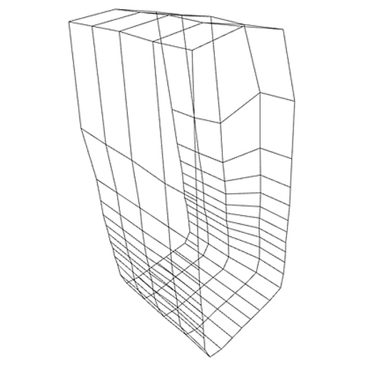
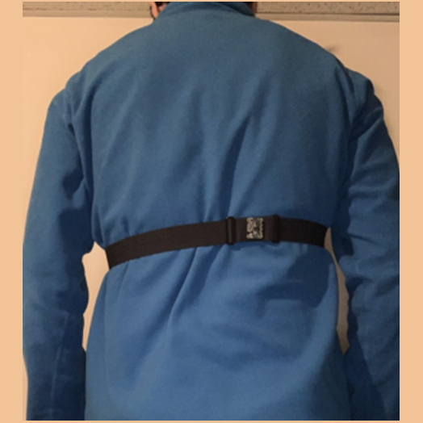

Ragany Portfolio
Here are some of my latest projects
I’m interested in medical robotics, AI, software
development and learning new things!
COST-EFFECTIVE LIDAR DEVICE
Technologies: TI MSP-EXP432E401Y microcontroller, VL53L1X time of flight (ToF) sensor, Python, C, Keil, stepper motor
Description
The device uses a TI MSP-EXP432E401Y microcontroller and a VL53L1X time of flight (ToF) sensor to create a 3D spatial mapping of its surroundings indoors.  The distance measurements are communicated from the ToF sensor to the microcontroller via I2C communication. Next, the measurements are sent to the user's PC via UART communication.
The distance measurements are communicated from the ToF sensor to the microcontroller via I2C communication. Next, the measurements are sent to the user's PC via UART communication.
How it works
The device operates using four main stages: signal processing, communication stage, data processing and data visualization.
The user starts the Python program and C code program in Keil. The stepper motor will rotate the ToF sensor in specified increments to collect data for a 360-degree scan. The user will then move the device forward a specific distance along the hall and click 'continue' on the Python program. These steps are repeated until sufficient scans are taken. A point cloud and visualization are then shown of the scanned room.
An example of the point cloud and the 3D scan of a hallway are shown below.
DEEP LEARNING AND CHEMISTRY
Denatured
Technologies: Python, GitHub, Google Colab, TensorFlow, Keras
Description
This project was designed for the MacHacks2022 Hackathon in collaboration with two other students. Our team placed 1st in the competition. Check out the full project here.
Our project takes the reactants and products of a chemical reaction in the form of SMILES and translates them into a machine-readable format. This is done by tokenizing individual molecules for relevant chemical features. The tokenization is inspired by byte-pair-encoding that is utilized in NLP. It is able to recognize recurring subunits across databases that may be of importance. These tokens are then assigned unique IDs using a dictionary so that they can be input into our model. Each reaction is input as a series of tokens. We used a Long short-term memory (LSTM) artificial recurrent neural network (RNN) to train our classifier. The model classifies reactions based on the class of the enzyme (Enzyme Commission Number).
How it works
We used Google Colab to work in a collaborative coding setting. To translate the given data to meaningful input to our machine, we used SMILES Pair Encoding (SMILES PE). SMILES PE learns the vocabulary of SMILES substrings from the ChEMBL dataset and uses the vocabulary to tokenize the values. We then created our own library of tokens and assigned unique IDs to each token. The IDs/tokens present in each reaction were then input into our model. The model was trained using an LSTM RNN. A model was used to predict the class of the enzyme (the first EC number). The training set was then split by the main class of each reaction, and 7 subclass models were trained to predict the subclasses. When evaluating the models, the main model first predicted the class of the reaction; the reaction was then fed into the corresponding submodel to determine the second EC number.
Accomplishments we are proud of
- This was everyone on the team's first time making a deep learning (DL) model. It was exciting to see everything come together!
- This was also our team's first time working with NLP and tokenization! Finding a way to preserve key information and features while quantizing the data was something new and of great importance to us.
- Our model was able to classify reactions for the first EC number with an accuracy of 79%! We were surprised and excited about this result!
- For our team, this was one of the first projects that we worked on to bridge the gap between chemistry and computer science. It was interesting to see the intersection between the two fields and the breadth of applications for DL.
What we learned during this project
- We learned about processing language and string inputs to extract useful and quantifiable features.
- We learned how to build and test deep learning models using TensorFlow Keras.
- We learned about different tools and APIs for working with ML, such as Google Colab.
- Using Google Colab, we were able to run our model using an NVIDIA Tesla K80 GPU. This was incredibly useful as, without the GPU, our model would have taken several hours to fit. With the use of Google Colab, we were able to do this in a matter of minutes.
Rotator Cuff Tear Rehabilitation Device
Technologies: Two Adafruit BNO055 Absolute Orientation Sensors, ESP32 microcontroller, C language, Arduino IDE, MATLAB, Autodesk Inventor Professional
Description
Working alongside two students, a device that remotely monitors improvements in recovery of rotator cuff injury and/or surgery was created. Our device communicates with a Bluetooth device to provide live feedback.

First, the clinician can assign a specific exercise for their patient. When the device is started, and an exercise has been selected, the patient receives prompts that let them know if they are safely executing their exercises. In addition, the frequency of incorrect motions will be logged so that the clinician can request additional information if needed. Secondly, there will also be weekly check-ins to look at the ROM of the shoulder to track recovery.
How it works
A C program was created to interface with the sensors and collect data to be logged into a text file. The logged data is then processed through MATLAB. Finally, the MATLAB program filters the data collected to produce the range of motion and weekly trend graphs.
Example output on the Bluetooth device to show range of motion measured for arm abduction exercise.
Example output on MATLAB showing the measured range of motion for the shoulder external rotation exercise and abduction exercise.

CO DETECTION WATCH
Technologies: Python, Raspberry Pi, breadboard and components (buzzer, LCD screen, LEDs, gas sensor), Bluetooth
Description
I worked alongside three students to create this project. We created a wearable watch that acts as a preventative device to monitor carbon monoxide levels in the air. Our targetted end-users include workers, such as engineers, paramedics and miners.

I worked on the Python code and breadboard setup. The program I wrote allows for the incoming data from the gas sensor to be translated into sound, light and text messages using peripherals.
How it works
The Raspberry Pi was used as a "mini-computer" to house the code and provide power to components on the breadboard. The Grove Multichannel Gas Sensor was used to measure gas concentration in parts per million. The incoming data is filtered, and as concentrations of a gas increase, users are notified to alert them of the severity of the situation. A series of conditional statements were used in the code to specify the severity of the unsafe gas levels. A Bluetooth connection was used to send information from the Raspberry Pi to the user's cell phone.
-
Cost-Effective LIDAR Device
Using a microcontroller, time of flight sensor and stepper motor, a LIDAR device was created to create a 3D spatial mapping of the surrounding indoors.
Learn More -
 Deep Learning and Chemistry
Deep Learning and ChemistryA classifier was trained to take in the reactants and products of a chemical reaction in the form of SMILES and translates them into a machine-readable format.
Learn More -
Rotator Cuff Tear Rehabilitation Device
An absolute orientation sensor was used to monitor the motion of the user’s shoulder in order to track improvements in rotator cuff injuries.
Learn More -
 CO Detection Watch
CO Detection WatchA gas sensor was used to track the levels of carbon monoxide and notify the user of unsafe levels via light, sound and text messages.
Learn More